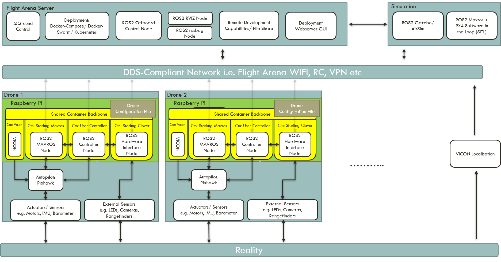
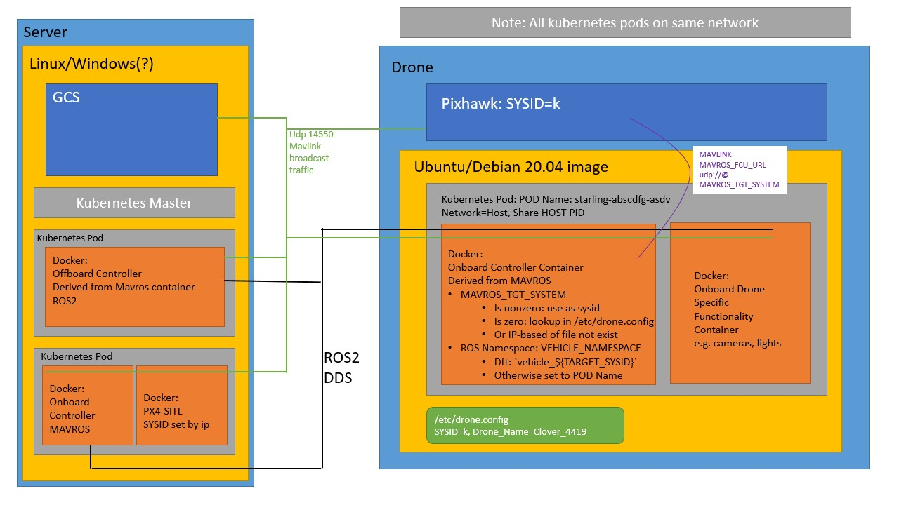

22. Flight Arena Architecture and Set Up¶
22.1 Architecture¶
A side effect of using kubernetes and docker is that the system is mostly network agnostic. As long as all elements of the system are on the same physical network, all elements should be able to communicate.

22.1.1 Flight Arena Networking¶
The flight arena (FA) runs on its own airgapped local network. The FA network exists on the CIDR subnet 192.168.10.0/24. There is a external dhcp server sitting on 192.168.10.252 which (as of writing) is configured to serve addresses to new devices from 192.168.10.105 - 192.168.10.199. Addresses below 105 are reserved for the flight arena machines, server and the VICON motion tracking system.
The flight arena machines then all have 2 network cards, one connecting to the flight arena network (grey cables), and one connecting to the internet via the UWE network (blue cables). These machines run from 192.168.10.83 - 192.168.10.85. The flight arena server has been set up on 192.168.10.80 (this can also be accessed via flyingserver.local) and is host centralised aspects of the system.
22.1.2 Starling¶
The kubernetes master node is set to run on the flight arena server on 192.168.10.80 or flyingserver.local. Any worker nodes (drones) must have the master node registered. Any machines/ work laptops that want to submit deployments to the cluster must have the cluster server set to the address of the arena server within their k3s.yaml config file (~/.kube/config/k3s.yaml).
Note: Security and proper cluster authentication should be set up in the future
As all pods should be running net=host all traffic moves over the 192.168.10.0/24 subnet.

The figure above shows an example application in action. There are essentially three independent communication channels:
- Mavlink broadcast over the network on port 14550 UDP.
- ROS2 DDS broadcast over the network.
- Kuberenetes control layer networks (
10.42.0.0/24)
22.1.2.1 Mavlink Broadcast¶
When a drone (simulated or physical) is connected as a node and the starling-mavros container is run on it, mavros will begin broadcasting to port 14550. This broadcast is conducted over the flight arena network and any machine on the network can pick up these broadcasts. Any drone can be flown directly through mavlink if desired.
22.1.2.2 ROS2 DDS Broadcast¶
It is envisioned that the majority of user facing communication is conducted through ROS2. For instance communication between controllers, or controlling external hardware on the drones such as LED lights. In ROS2, communication is conducted through the DDS middleware protocol. DDS is a standard for machine-to-machine high-performance, real-time, scalable communication which uses a publish-subscribe pattern over UDP. Each ROS2 node will broadcast its list of available publishers to the whole network. Another node can subscribe and data transfer between the two will commence.
This means that any machine or laptop connected to the flight arena network and has ROS2 foxy running on the operating system will have access to the list of topics. These external machines do not have to be part of the cluster. This gives a user-friendly way of developing and interacting with the cluster.
22.1.2.3 Kubernetes Control Layer¶
Kubernetes generates its own network layer between its nodes on 10.42.0.0/24. These are primarily extra deployments, daemonsets and services which facilitate pod failure recovery, automatic deployment and web based user interface port forwarding.
22.2 Flight Arena Details¶
22.2.1 Using kubectl from Remote Machines¶
To use kubectl from a remote machine, a copy of the k3s.yaml from the master machine is needed.
On the machine you want to use kubectl from, run:
export KUBECONFIG=/path/to/k3s.yaml
This adds the KUBECONFIG variable to the environment. To make it permanent, it needs to be added to the .bashrc.
Once this is done, kubectl can be used as normal and will connect to the master. To test, run:
kubectl cluster-info
You should see Kubernetes control plane is running at... reflecting your Kubernetes master.
22.2.2 Automatic Container Deployment via DaemonSets¶
There are 3 daemonsets configured to perform automatic deployment of containers on any node which satisfies the daemonsets constraints on tags. This should be updated as more are added or they are taken away.
- Deployment of
starling-mavroson any node with tagstarling.dev/vehicle-class:rotary - Deployment of
starling-viconon any node with tagstarling.dev/type: vehicle - Deployment of
starling-cloveron any node with tagstarling.dev/vehicle-type: clover
22.2.3 Time Synchronisation¶
When running the Vicon node on a separate PC, the clock of the onboard PC needs to be closely synched to allow the position estimates to be used by PX4. You can do this with chrony.
22.2.3.1 Installation¶
One liner if package is available:
sudo apt install chrony
22.2.3.2 Config¶
chrony's configuration is in /etc/chrony/chrony.conf. The configuration needed depends on which side of the system is being configured.
22.2.3.2.1 Vehicle side¶
On the vehicle, chrony needs to be configured to add a time server on the local network. This can be done by adding the below to the config file:
# Use local time source
server ${GROUND_PC_IP} iburst prefer
22.2.3.2.2 Ground side¶
On the ground, chrony is configured to accept connections from clients on the local network:
# Allow clients to connect to this computer
allow ${LOCAL_SUBNET_PREFIX} # e.g. 192.168.10
bindaddress ${GROUND_PC_IP}
local stratum 10
22.2.3.3 Restart¶
Once the edits to the config file have been made, restart chrony through systemd:
sudo systemctl restart chrony
22.2.3.4 Troubleshooting¶
chronyc sources will show the current status of the computer's time sync.
chronyc makestep should force the computer to synchronise with the server.
22.2.4 Docker Local Registry as a Pass Through Cache¶
In order for the drones on the flight arena network to pull docker images from docker hub, the flight arena server has a docker registry running as a pull through cache. The drones must know to attempt to pull images from the local flight server first.
22.2.4.1 Vehicle Side¶
On the vehicle, the docker daemon needs to be updated to use the flight arena server as a registry mirror. Add the following into /etc/docker/daemon.json:
{
"registry_mirrors": ["192.168.10.80:5000"]
}
22.2.4.2 Ground Side¶
The flight arena server has a registry docker image running that is configured using the following guide in docker docs